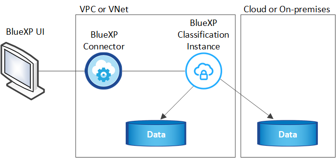

Notas de la versión
Notas de la versión
Más información sobre la clasificación de BlueXP
 Sugerir cambios
Sugerir cambios
La clasificación de BlueXP es un servicio de gobernanza de datos para BlueXP que analiza tus fuentes de datos corporativos on-premises y en la nube para asignar y clasificar datos, así como para identificar la información privada. Esto puede ayudarle a reducir los riesgos de seguridad y de cumplimiento de normativas, a reducir los costes de almacenamiento y a facilitar los proyectos de migración de datos.
Funciones
La clasificación de BlueXP utiliza la inteligencia artificial (IA), el procesamiento del lenguaje natural (NLP) y el aprendizaje automático (ML) para entender el contenido que escanea y, así, extraer entidades y categorizar el contenido debidamente. Esto permite la clasificación de BlueXP para proporcionar las siguientes áreas de funcionalidad.
Mantenga el cumplimiento normativo
La clasificación de BlueXP proporciona varias herramientas que pueden ayudarte en tus tareas de cumplimiento de normativas. Puedes usar la clasificación de BlueXP para lo siguiente:
-
Identificación de la Información personal de identificación (PII).
-
Identificar un amplio alcance de información personal confidencial según las normativas de privacidad del RGPD, la CCPA, el PCI y la HIPAA.
-
Responda a las solicitudes de acceso de sujetos de datos (DSAR) en función del nombre o la dirección de correo electrónico.
-
Identifica si se encuentran identificadores únicos de tus bases de datos en archivos de otros repositorios, básicamente creando tu propia lista de «datos personales» que se identifican en los análisis de clasificación de BlueXP.
-
Notificar a determinados usuarios por correo electrónico cuando los archivos contienen un PII determinado (definir este criterio mediante "Normativas") para que pueda decidir sobre un plan de acción.
Refuerce la seguridad
La clasificación de BlueXP puede identificar los datos a los que podría correr riesgo de acceder con fines criminales. Puedes usar la clasificación de BlueXP para lo siguiente:
-
Identifique todos los archivos y directorios (recursos compartidos y carpetas) con permisos abiertos que se exponen a toda la organización o al público.
-
Identifique los datos confidenciales que se encuentran fuera de la ubicación inicial dedicada.
-
Cumpla con las políticas de retención de datos.
-
Utilice Policies para notificar automáticamente al personal de seguridad sobre nuevos problemas de seguridad y que puedan actuar inmediatamente.
-
Agregue etiquetas personalizadas a los archivos (por ejemplo, "hay que mover") y asigne un usuario de BlueXP para que esa persona pueda tener actualizaciones en los archivos.
-
Ver y modificar "Etiquetas de Azure Information Protection (AIP)" en sus archivos.
Optimice la utilización del almacenamiento
La clasificación de BlueXP proporciona herramientas que pueden ayudarte con el TCO (TCO) de tu almacenamiento. Puedes usar la clasificación de BlueXP para lo siguiente:
-
Aumente la eficiencia del almacenamiento identificando datos duplicados o no relacionados con la empresa. Puede utilizar esta información para decidir si desea mover o eliminar determinados archivos.
-
Elimine los archivos que parezcan poco seguros o demasiado arriesgados a dejar en el sistema de almacenamiento o que haya identificado como duplicados. Puede utilizar Policies para eliminar automáticamente los archivos que coincidan con determinados criterios.
-
Ahorre en costes de almacenamiento identificando los datos inactivos que puede establecer niveles en almacenamiento de objetos más económico. "Obtenga más información sobre la organización en niveles en sistemas Cloud Volumes ONTAP". "Obtenga más información acerca de la organización en niveles desde sistemas ONTAP en las instalaciones".
Acelere la migración de datos
La clasificación de BlueXP puede utilizarse para analizar tus datos on-premises antes de migrarlos a la nube pública o privada. Puedes usar la clasificación de BlueXP para lo siguiente:
-
Consulte el tamaño de los datos y si alguno de ellos contiene información confidencial antes de moverlos.
-
Filtre los datos de origen (según más de 25 tipos de criterios) para que pueda mover sólo los archivos necesarios al destino. No se mueven los datos innecesarios.
-
Mueva, copie y sincronice automáticamente y continuamente solo los datos necesarios en el repositorio en el cloud.
Orígenes de datos compatibles
La clasificación de BlueXP puede analizar y analizar datos estructurados y no estructurados a partir de los siguientes tipos de orígenes de datos:
NetApp:
-
Cloud Volumes ONTAP (implementado en AWS, Azure o GCP)
-
Clústeres de ONTAP en las instalaciones
-
StorageGRID
-
Azure NetApp Files
-
Amazon FSX para ONTAP
-
Cloud Volumes Service para Google Cloud
No NetApp:
-
Isilon de Dell EMC
-
Pure Storage
-
Nutanix
-
Cualquier otro proveedor de almacenamiento
Cloud:
-
Amazon S3
-
Google Cloud Storage
-
OneDrive
-
SharePoint online
-
SharePoint en las instalaciones (SharePoint Server)
-
Unidad de Google
Bases de datos:
-
Servicio de bases de datos relacionales de Amazon (Amazon RDS)
-
MongoDB
-
MySQL
-
Oracle
-
PostgreSQL
-
SAP HANA
-
Servidor SQL (MSSQL)
La clasificación de BlueXP es compatible con las versiones de NFS 3.x, 4,0 y 4,1, y las versiones de CIFS 1.x, 2,0, 2,1 y 3,0.
Coste
-
El coste de utilizar la clasificación de BlueXP depende de la cantidad de datos que se estén escaneando. Los primeros 1 TB de datos que analiza la clasificación de BlueXP en un espacio de trabajo de BlueXP son gratis durante 30 días. Esto incluye todos los datos de todos los entornos de trabajo y orígenes de datos. Debe haber una suscripción a AWS, Azure o GCP Marketplace o una licencia con su propia licencia de NetApp para seguir analizando datos después de ese punto. Consulte "precios" para obtener más detalles.
-
Para instalar la clasificación de BlueXP en la nube, es necesario poner en marcha una instancia de nube, lo que se genera en los cargos del proveedor de nube en el que se la pone en marcha. Consulte el tipo de instancia que se pone en marcha en cada cloud proveedor. No hay coste si instalas la clasificación de BlueXP en un sistema on-premises.
-
Para la clasificación de BlueXP es necesario que hayas puesto en marcha un conector BlueXP. En muchos casos ya tiene un conector debido a otros servicios y almacenamiento que está utilizando en BlueXP. La instancia de Connector representa cargos del proveedor de cloud en el que se ha puesto en marcha. Consulte "tipo de instancia que se pone en marcha para cada proveedor de cloud". No hay costo si instala el conector en un sistema local.
Costes de transferencia de datos
Los costes de la transferencia de datos dependen de su configuración. Si la instancia de clasificación y el origen de datos de BlueXP se encuentran en la misma zona y región de disponibilidad, no hay costes de transferencia de datos. Pero si el origen de los datos, como un sistema Cloud Volumes ONTAP o un bloque S3, está en una región o zona de disponibilidad diferente, su proveedor cloud le cobrará los costes de transferencia de datos. Consulte estos enlaces para obtener más información:
La instancia de clasificación de BlueXP
Cuando pones en marcha la clasificación de BlueXP en la nube, BlueXP pone en marcha la instancia en la misma subred que Connector. "Más información sobre conectores."

Tenga en cuenta lo siguiente acerca de la instancia predeterminada:
-
En AWS, la clasificación de BlueXP se ejecuta en un "instancia m6i.4xlarge" Con un disco GP2 de 500 GIB. La imagen del sistema operativo es Amazon Linux 2. Cuando se implementa en AWS, puede elegir un tamaño de instancia más pequeño si va a escanear una pequeña cantidad de datos.
-
En Azure, la clasificación de BlueXP se ejecuta en A. "VM Standard_D16s_v3" Con un disco de 500 GIB. La imagen del sistema operativo es CentOS 7.9.
-
En GCP, la clasificación de BlueXP se ejecuta en un "n2-Standard-16 VM" Con un disco persistente estándar de 500 GIB. La imagen del sistema operativo es CentOS 7.9.
-
En las regiones en las que la instancia predeterminada no está disponible, la clasificación de BlueXP se ejecuta en una instancia alternativa. "Consulte los tipos de instancia alternativa".
-
La instancia se denomina CloudCompliance con un hash generado (UUID) concatenado. Por ejemplo: CloudCompliance-16bb6564-38ad-4080-9a92-36f5fd2f71c7
-
Solo se pone en marcha una instancia de clasificación de BlueXP por cada Connector.
También puedes poner en marcha la clasificación de BlueXP en un host Linux on-premises o en un host de tu proveedor de nube preferido. El software funciona exactamente de la misma manera, independientemente del método de instalación que elija. Las actualizaciones del software de clasificación de BlueXP se automatizan siempre que la instancia tenga acceso a Internet.

|
La instancia debe permanecer ejecutándose en todo momento porque la clasificación de BlueXP analiza los datos de forma continua. |
Con un tipo de instancia más pequeño
Puedes poner en marcha la clasificación de BlueXP en un sistema con menos CPU y menos RAM, pero existen algunas limitaciones al usar estos sistemas menos potentes.
| Tamaño del sistema | Especificaciones | Limitaciones |
|---|---|---|
Extra grande |
32 CPU, 128 GB de RAM, SSD de 1 TiB |
Puede escanear hasta 500 millones de archivos. |
Grande (predeterminado) |
16 CPU, 64 GB de RAM, 500 GIB de SSD |
Puede escanear hasta 250 millones de archivos. |
Mediano |
8 CPU, 32 GB de RAM, 200 GIB de SSD |
El análisis es más lento y sólo puede analizar un millón de archivos. |
Pequeño |
8 CPU, 16 GB de RAM, 100 GIB de SSD |
Las mismas limitaciones que "Medio", más la capacidad de identificar "nombres de asunto de los datos" los archivos internos están desactivados. |
Al poner en marcha la clasificación de BlueXP en la nube en AWS, puedes elegir una instancia grande, mediana o pequeña. Al implementar la clasificación de BlueXP en Azure o GCP, envía un correo electrónico a ng-contact-data-sense@netapp.com para obtener ayuda si quieres utilizar uno de estos sistemas alternativos. Tendremos que trabajar con usted para poner en marcha estas otras configuraciones de cloud.
Cuando ponga en marcha la clasificación de BlueXP en las instalaciones, solo tiene que utilizar un host Linux con las especificaciones alternativas. No necesita ponerse en contacto con NetApp para obtener ayuda.
Funcionamiento de la clasificación de BlueXP
En un nivel alto, la clasificación de BlueXP funciona así:
-
Implementas una instancia de clasificación de BlueXP en BlueXP.
-
Puede activar la asignación de alto nivel o el análisis de alto nivel en uno o más orígenes de datos.
-
La clasificación de BlueXP analiza los datos mediante un proceso de aprendizaje de IA.
-
Utilice las consolas y herramientas de informes que se proporcionan con el fin de ayudarle en sus esfuerzos de cumplimiento de normativas y gobierno.
Cómo funcionan las exploraciones
Después de habilitar la clasificación de BlueXP y seleccionar los repositorios que desea analizar (estos son los volúmenes, los bloques, los esquemas de la base de datos o los datos de usuario de OneDrive o SharePoint), comienza inmediatamente a analizar los datos para identificar los datos personales y confidenciales. Debería centrarse en analizar los datos de producción en directo en la mayoría de los casos en lugar de realizar backups, duplicados o sitios de recuperación ante desastres. A continuación, la clasificación de BlueXP asigna sus datos de organización, categoriza cada archivo e identifica y extrae entidades y patrones predefinidos en los datos. El resultado de la exploración es un índice de información personal, información personal confidencial, categorías de datos y tipos de archivo.
La clasificación de BlueXP se conecta a los datos igual que cualquier otro cliente ya que se monta en los volúmenes de NFS y CIFS. Se accede automáticamente a los volúmenes NFS como de solo lectura, mientras que se necesitan proporcionar credenciales de Active Directory para analizar volúmenes CIFS.

Tras el análisis inicial, la clasificación de BlueXP analiza continuamente los datos por turnos para detectar los cambios incrementales (por este motivo es importante mantener la instancia en ejecución).
Puede habilitar y deshabilitar los análisis a nivel del volumen, en el nivel de bloque, en el nivel de esquema de base de datos, en el nivel de usuario de OneDrive y en el nivel del sitio de SharePoint.
¿Cuál es la diferencia entre las exploraciones de asignación y clasificación
La clasificación de BlueXP te permite ejecutar un análisis general de «asignaciones» en fuentes de datos seleccionadas. La asignación sólo ofrece una descripción general de alto nivel de los datos, mientras que la clasificación proporciona un análisis profundo de los datos. La asignación se puede realizar en sus orígenes de datos muy rápidamente porque no tiene acceso a los archivos para ver los datos dentro.
A muchos usuarios les gusta esta funcionalidad porque quieren analizar rápidamente sus datos para identificar los orígenes de datos que requieren más investigación y, a continuación, pueden habilitar análisis de clasificación solo en los orígenes o volúmenes de datos necesarios.
En la siguiente tabla se muestran algunas de las diferencias:
| Función | Clasificación | Asignación |
|---|---|---|
Velocidad de escaneado |
Lento |
Y rápido |
Lista de tipos de archivo y capacidad utilizada |
Sí |
Sí |
Número de archivos y capacidad utilizada |
Sí |
Sí |
Antigüedad y tamaño de los archivos |
Sí |
Sí |
Capacidad de ejecutar una "Informe de asignación de datos" |
Sí |
Sí |
Página de investigación de datos para ver los detalles del archivo |
Sí |
No |
Buscar nombres dentro de los archivos |
Sí |
No |
Cree "normativas" que proporcionan resultados de búsqueda personalizados |
Sí |
No |
Categorice los datos mediante etiquetas AIP y etiquetas de estado |
Sí |
No |
Copie, elimine y mueva los archivos de origen |
Sí |
No |
Capacidad para ejecutar otros informes |
Sí |
No |
Con qué rapidez escanea los datos de clasificación de BlueXP
La velocidad de análisis se ve afectada por la latencia de la red, la latencia del disco, el ancho de banda de la red, el tamaño del entorno y los tamaños de distribución de archivos.
-
Cuando se realizan escaneos de mapeo, la clasificación de BlueXP puede analizar entre 100-150 TIBs de datos al día, por nodo de escáner.
-
Cuando se realizan análisis de clasificación, la clasificación de BlueXP puede analizar entre 15-40 TIBs de datos al día, por nodo de escáner.
Información que indexa la clasificación de BlueXP
La clasificación de BlueXP recopila, indexa y asigna categorías a tus datos (archivos). Los datos que indexa la clasificación de BlueXP incluyen los siguientes:
- Metadatos estándar
-
La clasificación de BlueXP recopila metadatos estándar sobre archivos: El tipo de archivo, su tamaño, fechas de creación y modificación, etc.
- Datos personales
-
Información de identificación personal, como direcciones de correo electrónico, números de identificación o números de tarjetas de crédito. "Más información sobre datos personales".
- Datos personales confidenciales
-
Tipos especiales de información confidencial, como datos sanitarios, origen étnico o opiniones políticas, según lo define el RGPD y otras regulaciones de privacidad. "Más información sobre datos personales confidenciales".
- Categorías
-
La clasificación de BlueXP toma los datos que ha escaneado y los divide en distintos tipos de categorías. Las categorías son temas basados en el análisis de IA del contenido y los metadatos de cada archivo. "Más información sobre categorías".
- Tipos
-
La clasificación de BlueXP toma los datos que ha escaneado y los desglosa por según el tipo de archivo. "Obtenga más información sobre los tipos".
- Reconocimiento de entidad de nombre
-
La clasificación de BlueXP usa la IA para extraer los nombres de las personas físicas de los documentos. "Obtenga información sobre cómo responder a las solicitudes de acceso a sujetos de datos".
Información general sobre redes
BlueXP implementa la instancia de clasificación de BlueXP con un grupo de seguridad que permite las conexiones HTTP de entrada desde la instancia de Connector.
Cuando se utiliza BlueXP en el modo SaaS, la conexión a BlueXP se establece a través de HTTPS, y los datos privados que se envían entre su navegador y la instancia de clasificación de BlueXP se protegen con un cifrado integral mediante TLS 1,2, lo que significa que NetApp y terceros no podrán leerlo.
Las reglas salientes están completamente abiertas. Se necesita acceso a Internet para instalar y actualizar el software de clasificación de BlueXP y para enviar las métricas de uso.
Si tiene requisitos estrictos de red, "Obtén más información sobre los extremos que contactos de clasificación de BlueXP".
Acceso de los usuarios a la información de cumplimiento
El rol asignado a cada usuario proporciona diferentes funcionalidades dentro de BlueXP y dentro de la clasificación de BlueXP:
-
Un Administrador de cuentas puede administrar la configuración de cumplimiento y ver la información de cumplimiento de todos los entornos de trabajo.
-
Workspace Admin puede administrar la configuración de cumplimiento y ver la información de cumplimiento sólo para los sistemas a los que tienen permisos de acceso. Si un administrador de espacio de trabajo no puede acceder a un entorno de trabajo en BlueXP, no podrá ver ninguna información de cumplimiento de normativas del entorno de trabajo en la pestaña de clasificación de BlueXP.
-
Los usuarios con la función Compliance Viewer sólo pueden ver información de cumplimiento y generar informes para los sistemas a los que tienen permiso de acceso. Estos usuarios no pueden habilitar o deshabilitar el análisis de volúmenes, bloques o esquemas de base de datos. Estos usuarios no pueden copiar, mover ni eliminar archivos.